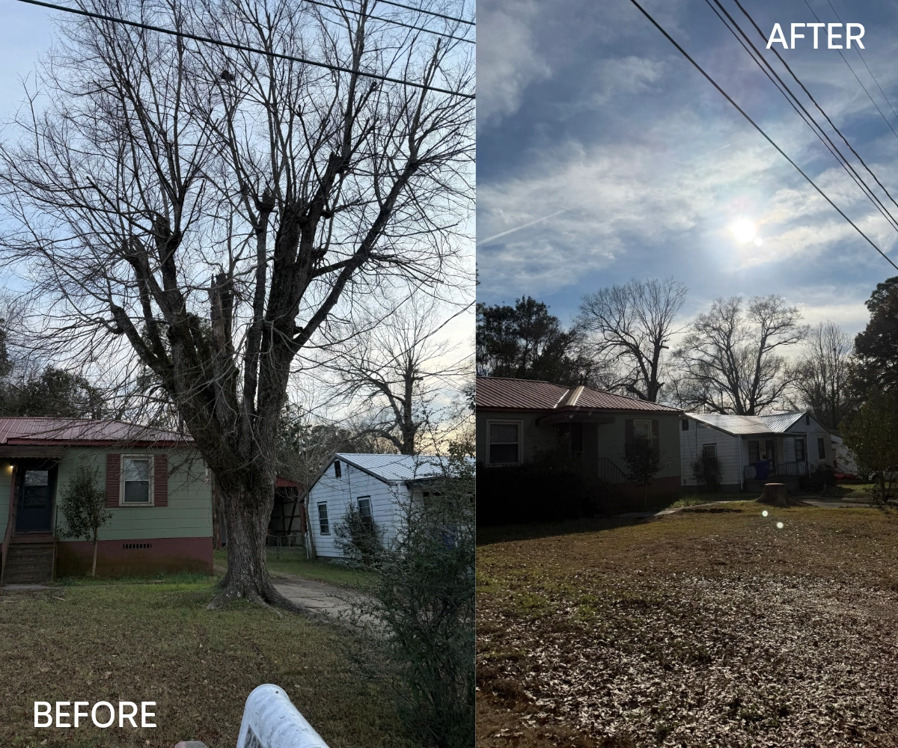

Tree Removal
Remove dead, leaning, storm-damaged, or unwanted trees while protecting the surrounding property.
Tree removal detailsTree removal in Troy, Alabama
Mammoth Tree Service helps homeowners and property owners remove problem trees, trim hazardous limbs, clean up storm damage, and grind stumps across Troy, Pike County, and nearby Alabama communities.

Local tree service
Tree removal is not just cutting wood. The right crew thinks about fences, gates, roofs, driveways, nearby buildings, power lines, and how the yard should look when the job is finished.
Remove dead, leaning, storm-damaged, or unwanted trees while protecting the surrounding property.
Tree removal detailsClear roofs, driveways, fences, buildings, and problem limbs with careful trimming and pruning.
Trimming detailsGrind the stump and choose either a smooth mulch finish or a cleaner topsoil-and-seed finish.
Stump optionsGet a better quote
For the fastest estimate, include full-tree photos, close-ups, driveway/gate access, nearby buildings, fences, power lines, and tape-measure photos for stumps.
Open Quote FormService areas
Mammoth serves Troy and surrounding areas, including Pike County, Montgomery, Dothan, Greenville, Enterprise, and Andalusia.
Common questions
Photos help Mammoth understand the scope, access, and hazards. For some jobs, an in-person look may still be needed before final pricing.
Show the surrounding area, obstacles, and a tape measure across the stump’s widest diameter and height.
Yes. Send photos of fallen limbs, damaged trees, access points, and anything nearby that could affect safe removal.